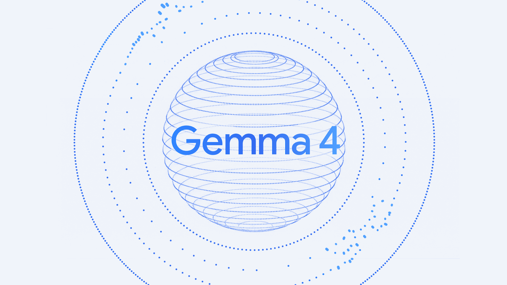

Inference & Validation Dataset:
A logic evaluation suite of 10 zero-shot multiple-choice questions designed to isolate cognitive reasoning gaps under quantization. Answers are graded binarily (0 or 1) to measure absolute accuracy.
Gemma 4 e2B Models → Load via Ollama (BF16 & Q4) → Execute 10 Zero-Shot Logic Puzzles → Log Telemetry (btop & ollama ps) → Evaluate Speed & Accuracy.
| Variable | Type | Description |
|---|---|---|
| Quantization Bits | Independent | BF16 vs. Q4_K_M GGUF |
| Throughput (TPS) | Dependent | Tokens per second generated |
| Logic Accuracy | Dependent | Benchmark test score (0-10) |
| GPU Specs | Control | Linux OS, Dedicated 8GB VRAM |
Tokens Per Second (TPS) results show a massive performance gain when the model executes entirely on the GPU:
4-bit quantization yields a **4.2x speedup** by fitting the entire model (7.7 GB) inside the GPU's VRAM.
Actual system telemetry captured during active inference (derived from btop):
| Telemetry Metric | Gemma Q4 | Gemma BF16 |
|---|---|---|
| CPU Core Utilization | 14% | 28% |
| CPU Package Temp | 63°C | 82°C |
| CPU Package Power Draw | 22.9 W | 34.9 W |
| GPU0 Core Utilization | 85% | 37% |
| GPU0 Core Temperature | 56°C | 68°C |
| GPU0 Core Power Draw | 57.0 W | 34.6 W |
| GPU0 VRAM Allocated | 7.4 GB | 4.9 GB (offloaded) |
| System RAM Allocation | 4.42 GB | 10.6 GB |
Offloading parts of the 11 GB BF16 model to CPU memory creates bus bottlenecking, limiting GPU utility and raising CPU temps to **82°C**.
Implication 1
4-bit quantization is highly effective for accelerating inference throughput and saving VRAM on consumer GPUs.
Implication 2
Offloading parts of a model to CPU (due to memory overflow) triggers a massive performance cliff and high thermal loads.
Implication 3
Quantized models are not recommended for high-precision logic tasks due to structural weight-precision loss.
Implication 4
While Q4 works well for casual conversational chat, it exhibits critical errors in spatial reasoning and bitwise math.
| No | Logical Domain | Correct Answer | BF16 | Q4 |
|---|---|---|---|---|
| Q1 | State Tracking (Coin) | A | A | A |
| Q2 | Knight/Knave/Spy | B | B | B |
| Q3 | Modular Arithmetic | B | B | B |
| Q4 | Recursive Bitwise | C | C | C* |
| Q5 | Cheryl's Birthday | B | A | A |
| Q6 | Causal/Counterfactual | B | B | B |
| Q7 | 3D Die Rotation | C | C | A |
| Q8 | Game Theory SPNE | C | C | C |
| Q9 | Linguistic Negation | B | B | B |
| Q10 | Bayesian Probability | A | A | A |
*Note: Q4 model arrived at the correct answer in Q4 via flawed bitwise calculations (16 & 8 = 8), only succeeding due to option constraints.
| Model Variant | Right (Correct) | Wrong (Incorrect) | Score |
|---|---|---|---|
| Gemma 4 e2B BF16 | 9 | 1 | 90% |
| Gemma 4 e2B Q4 | 8 | 2 | 80% |